This chapter covers fertility struggles, pregnancy loss, infant mortality, child illness, teenage rebellion, and family dissolution. Establish Lines & Veils before play. Use the traffic-light system: red light = stop immediately, yellow light = adjust tone, green light = continue. A player may delegate any family scene to the GM and never resolve it at the table. No character's reproductive status, fertility, or family structure may be assigned without the player's explicit consent.
👨👩👧👦 Family, Children & Parenting Mechanics
In Reality RPG, having children is the single largest commitment a character can make — mechanically, financially, and emotionally. A child reshapes every other system in the game: sleep disappears, finances collapse, relationships strain, and stress compounds for 18+ years. This page covers nine interconnected systems that model the full arc of family life, from the decision to try for a baby through the moment a teenager leaves for college.
Children in Reality RPG are not side quests. They are campaign-altering events. A player who chooses to parent is choosing to play a harder game — and one that rewards patience, resilience, and love in ways no dungeon crawl ever could.
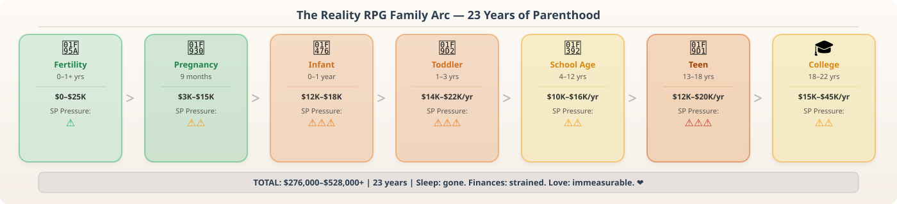
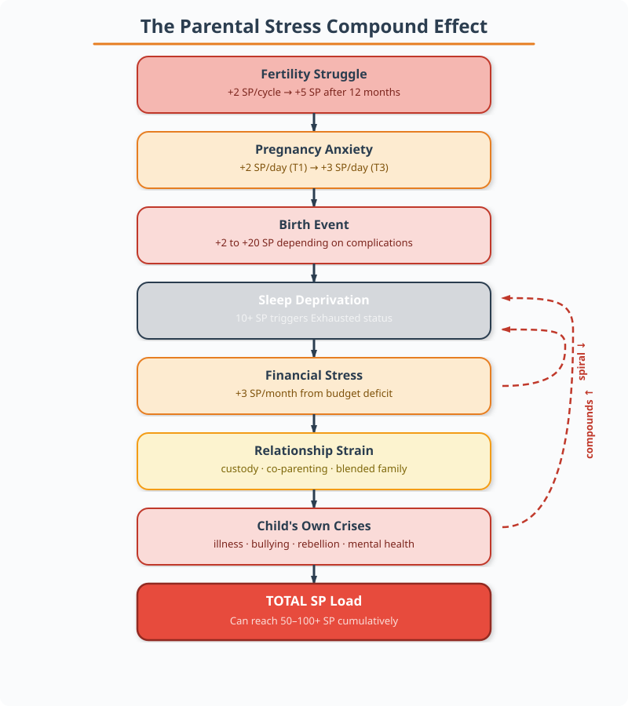
1. Infertility & Fertility Treatments
Not every couple who wants a child can conceive easily. Roughly 1 in 8 couples in the US experience infertility. In Reality RPG, this is modeled as a Trying to Conceive track that can become a source of significant stress.
1a. Trying to Conceive — Monthly Cycle
Each month a couple tries, the GM rolls 2d10 against a Fertility Target Number based on the ages of both partners:
Roll 2d10. If the result is ≤ TN, pregnancy occurs that cycle. If the roll fails, the couple learns they are not pregnant — and the pregnant partner gains +2 SP from the emotional letdown.
After 6 consecutive failed cycles, each additional failure adds +3 SP instead of +2. After 12 consecutive failures, each adds +5 SP. This models the deepening grief of prolonged infertility. A character who reaches 10+ SP from fertility alone should be checked for anxiety or depression symptoms (see Mental Health).
1b. Fertility Testing
After 6–12 months of unsuccessful trying, a couple may pursue medical evaluation. This triggers its own 2d10 checks:
Blood Hormone Panel
FSH, LH, estradiol, AMH
$200–$800 · Often partial insurance
Reveals: ovarian reserve, hormone balance
Pelvic Ultrasound
$300–$1,000 · Sometimes covered
Reveals: uterine structure, PCOS signs, fibroids
Semen Analysis
$200–$500 · Often covered
Reveals: sperm count, motility, morphology
HSG (Tube Patency)
$500–$1,500 · Variable coverage
Reveals: blocked fallopian tubes
Thyroid Panel
TSH, free T4 · $100–$400 · Usually covered
Reveals: thyroid dysfunction affecting fertility
The testing itself is stressful: the tested character gains +1 SP per test. If testing reveals a treatable condition, the GM notes it. If testing reveals an untreatable or unknown cause, the character gains an additional +3 SP.
1c. IVF & Assisted Reproduction
In Vitro Fertilization is the most common assisted reproduction method. Each IVF cycle costs 💰 $12,000–$25,000 (often not covered by insurance). The patient undergoes hormone injections for 10–14 days, egg retrieval surgery, and embryo transfer.
Each cycle requires a 2d10 roll against the IVF Success TN:
Each failed IVF cycle adds +5 SP to the patient (and +2 SP to the partner). The physical side effects of hormone injections include bloating, mood swings, and injection-site pain — requiring a VIG check at TN 40 each cycle. Failure means the patient gains Tired status for 3–5 days post-retrieval.
Sarah (age 39, VIG 14, RES 10) and her partner Mark have been trying for 14 months. They've accumulated 65 SP from failed cycles (12 × 5 = 60, plus 5 from testing). Sarah undergoes IVF Cycle 1 — the hormone injections require a VIG check at TN 40. She rolls 2d10 = 28, + her VIG modifier (+4) = 32. Success — she handles the physical side effects without major issues. The embryo transfer requires a 2d10 roll at TN 55 (her age bracket). She rolls 61 — failure. Sarah gains +5 SP (total 70). She and Mark schedule Cycle 2.
1d. Adoption as an Alternative Path
Some couples pursue adoption from the start; others turn to it after fertility treatments fail. The adoption process is covered in Section 7 below. Characters who choose adoption after infertility may experience grief over lost biological possibility — the GM should offer a RES check at TN 50 to process this transition. Failure adds +3 SP and may trigger a depressive episode (see Mental Health).
2. Pregnancy — The Three-Trimester System
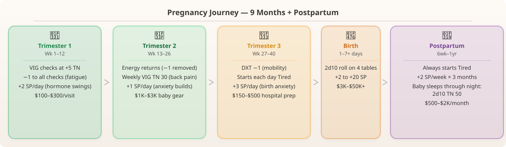
When a pregnancy roll succeeds, the pregnant character enters a 9-month (36-week) pregnancy track divided into three trimesters, each with distinct mechanical effects. The pregnant character gains the Pregnant status for the duration. The non-pregnant partner gains Expectant Parent status.
Once pregnancy begins, the character cannot "quit" the pregnancy questline. It must be carried to term, terminated (if legal and accessible), or end in miscarriage. Each path carries its own mechanical and emotional consequences.
2a. First Trimester (Weeks 1–12)
The first trimester is the most physically disruptive. The pregnant character suffers the following effects:
VIG +5 TN
Morning Sickness
−1 All Checks
Fatigue
+2 SP/day
Emotional Volatility
VIG TN 35/wk
Body Aches
Prenatal care: The first prenatal visit occurs around week 8. Cost: $100–$300 per visit without insurance. The character must attend regular prenatal appointments — missing one adds +1 SP (worry about the baby's health).
2b. Second Trimester (Weeks 13–26)
The "honeymoon" period — energy returns, but the body changes dramatically:
VIG Recovers
Energy Returns
VIG TN 30/wk
Physical Discomfort
+1 SP/day
Anxiety Builds
$1K–$3K
Baby Gear
Prenatal appointments increase to every 4 weeks. Cost: $100–$300 per visit. The anatomy scan (week 20) reveals the baby's sex — a major roleplaying moment. Both parents gain +2 SP from the emotional intensity of seeing the ultrasound.
2c. Third Trimester (Weeks 27–40)
The final stretch brings the most physical challenges:
DXT −1
Mobility Issues
Starts Tired
Sleep Disruption
+3 SP/day
Birth Anxiety
2d10 TN 25/wk
False Labor
2d. The Birth Event
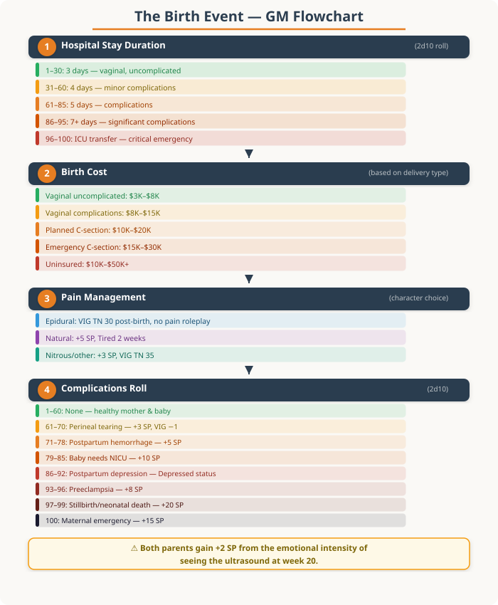
When the pregnancy reaches term (week 37–42), the birth event triggers. The GM determines the birth experience through a series of checks:
Step 1: Determine Hospital Stay Duration. Roll 2d10:
Step 2: Birth Cost. The cost of delivery varies dramatically:
Vaginal, Uncomplicated
💰 $3,000–$8,000
Usually covered (deductible applies)
Vaginal w/ Complications
💰 $8,000–$15,000
Usually covered
Planned C-Section
💰 $10,000–$20,000
Usually covered
Emergency C-Section
💰 $15,000–$30,000
Usually covered
Uninsured Birth
💰 $10,000–$50,000+
None — full cost to family
Step 3: Pain Management Choices. The pregnant character chooses before labor begins:
Epidural
Removes pain roleplay. VIG TN 30 post-birth for recovery from side effects (itching, numbness, difficulty peeing). Character may feel they "missed" the experience.
Natural Birth
No mechanical penalty, but +5 SP from pain and Tired for 2 weeks post-birth. Intense, transformative experience. Some report feeling stronger afterward.
Nitrous Oxide / Other
Reduces SP gain to +3. Moderate pain roleplay. VIG TN 35 post-birth. Middle ground — some pain, some relief.
Step 4: Complications Roll. Roll 2d10 on the Birth Complications Table:
Sarah gives birth at week 39. The GM rolls 2d10 = 42 for hospital stay duration — 4 days (minor complications). Sarah chose epidural, so the GM rolls her VIG recovery check: 2d10 = 22, +4 = 26 vs TN 30. Success — minimal side effects. The complications roll is 2d10 = 55 — none. Lily is healthy, weighing 7 lbs 4 oz. Sarah gains +2 SP from the emotional intensity. The birth costs $12,000; Sarah's insurance covers 80%, leaving a $2,400 bill. Both Sarah and Mark are exhausted but elated.
3. Infant Care (0–12 Months)
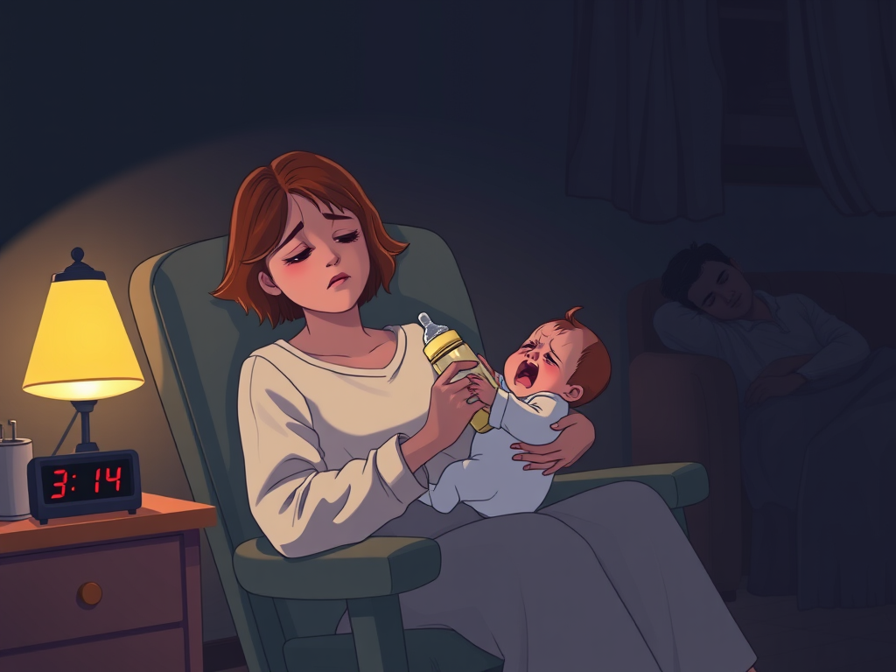
The newborn period is the most mechanically punishing phase of parenthood. The character who is the primary caregiver (or both parents) suffers massive time and energy costs.

3a. Feeding Schedule
Babies eat every 2–3 hours, around the clock. This means 8–12 feedings per day. Each feeding takes 30–45 minutes (breastfeeding) or 20–30 minutes (bottle, including preparation). There is no sleep through the night for the first 3–6 months.
0–1 mo
8–12×/day
4–9 hrs total
2–3 mo
6–8×/day
3–4 hrs total
4–6 mo
5–6×/day
2–3 hrs total
7–12 mo
3 meals+2 snacks
1–1.5 hrs total
3b. Sleep Deprivation Mechanics
The primary caregiver always starts each day at Tired status. After 3 months, the baby may start sleeping longer stretches — roll 2d10 at TN 50 each month. On a success, the baby sleeps 4+ hours at night, and the caregiver no longer starts Tired. This is a cumulative check — each month of failure adds +2 to the roll (the baby gradually learns).
If a caregiver accumulates 10+ SP from sleep deprivation alone, they must make a RES check at TN 45. Failure means the character gains the Exhausted status: all checks at +5 TN, and the character cannot perform tasks requiring fine motor skills (DXT checks are impossible) until they get 8+ hours of continuous sleep.
3c. Developmental Milestones
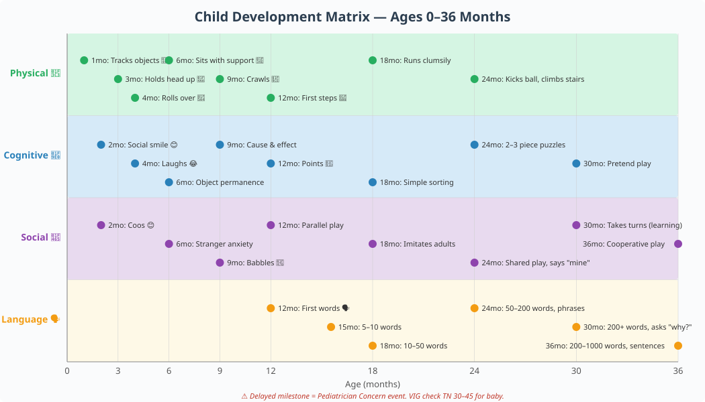
Each month, the GM rolls to see if the baby hits the next developmental milestone. This is mostly roleplay, but missing a milestone triggers a Pediatrician Concern event:
1 mo
Tracks objects
2 mo
Social smile
3 mo
Head up
4 mo
Rolls over
6 mo
Sits + solids
9 mo
Crawls
12 mo
First steps
If a milestone check fails, the pediatrician recommends early intervention services. This adds +2 SP (worry) and costs 💰 $0–$500/month depending on insurance. A second check one month later determines if the delay was temporary or persistent.
3d. Diaper Changes
A newborn goes through 8–12 diapers per day. That's 2,920–4,380 diapers in the first year. Cost: 💰 $700–$1,500/year for disposable diapers, or 💰 $200–$400 initial investment for cloth + ongoing laundry costs.
3e. Baby Gear Costs
Crib
💰 $200–$800 · Lifespan: 3–5 years
Car Seat
💰 $100–$300 · Lifespan: 4–6 years
Stroller
💰 $100–$600 · Lifespan: 3–4 years
Diaper Bag
💰 $30–$150 · Lifespan: 3–5 years
Baby Monitor
💰 $50–$300 · Lifespan: 3–5 years
Baby Clothes (1st yr)
💰 $300–$800 · Outgrown quickly
High Chair
💰 $50–$300 · Lifespan: 3–5 years
Bouncer / Swing
💰 $40–$150 · Lifespan: 6–12 months
💰 Total first-year gear cost: $1,000–$3,500 (less if buying used).
3f. Pediatrician Visits
Newborns see the pediatrician at: 3–5 days, 2 weeks, 1, 2, 4, 6, 9, 12, 15, 18, and 24 months. That's 12+ visits in the first 2 years. Cost per visit: 💰 $100–$250 without insurance. Vaccines are recommended at each visit — each vaccine adds +1 SP to the parent (worry about side effects, even if unfounded).
Mark and Sarah's daughter Lily is 6 weeks old. Mark's workday begins. He starts the day Tired (automatic). At 2:00 AM, Lily wakes crying. Mark gets up, feeds her for 35 minutes, changes her diaper, and tries to get back to sleep. He only gets 2 hours before she cries again. The next morning, Mark has an important presentation at work. His INT check to present effectively is at +5 TN because he's Tired. He rolls 2d10 = 52, +6 (INT modifier) = 58 vs TN 45 (+5 = TN 50). Partial success — he stumbles through a few slides but recovers. Sarah, meanwhile, has accumulated 18 SP from sleep deprivation alone and makes her RES check: 2d10 = 34, +4 (RES modifier) = 38 vs TN 45. Success — she avoids Exhausted status… for now.
4. Toddler Years (Ages 1–3)
The toddler years bring a new set of challenges. The child is mobile, vocal, and increasingly independent — which means the parents' job shifts from keeping the baby alive to keeping the toddler from doing something dangerous.
4a. Potty Training
Between ages 18 months and 3 years, the child must be potty trained. This is a multi-month process requiring patience and consistency:
Introduction
2–4 weeks
RES TN 40/wk
💰 $10–$30
Active Training
1–3 months
RES TN 45/daily
💰 $30–$80
Night Training
3–12 months
RES TN 50/mo
Ongoing costs
Each failed daily RES check adds +1 SP to the training parent. Accidents are frequent and frustrating. A child who fails potty training by age 3 may need professional evaluation — +3 SP and a visit to a pediatrician or specialist.
4b. Tantrums
Toddler tantrums are a daily event. The parent must make a RES check at TN 40 to handle a tantrum effectively. Failure means the parent either loses their temper (+2 SP, potential trauma to the child) or gives in to unreasonable demands (reinforcing bad behavior, +1 SP from frustration).
Tantrum frequency by age:
4c. Daycare & Childcare Costs
If both parents work, daycare is essential. The cost is staggering:
Home Daycare
💰 $600–$1,000/mo
Variable quality · Fewer regulations, smaller ratios
Daycare Center
💰 $800–$1,500/mo
Generally good · More structured, licensed
Preschool (Age 3+)
💰 $500–$2,000/mo
Good to excellent · Educational focus, part-day
Nanny / In-Home
💰 $1,500–$3,000/mo
Excellent · One-on-one, flexible schedule
Family Member
💰 $0–$500/mo
Variable · Creates family obligation debt
💰 Annual daycare cost: $9,600–$18,000/year — often more than a college tuition. An EXP check at TN 40 to find subsidized or lower-cost options can reduce costs by 20–40%.
4d. Speech & Social Development
Between ages 1–3, the child's vocabulary explodes. The GM should track the child's speech development:
| Age | Expected Vocabulary | If Behind |
|---|---|---|
| 12 months | 1–3 words | Wait and watch |
| 18 months | 10–50 words | Speech screening recommended |
| 2 years | 50–200 words, 2-word phrases | Speech therapy referral (💰 $100–$250/session) |
| 3 years | 200–1,000 words, sentences | Full evaluation needed (+3 SP for parents) |
Socialization begins in toddlerhood. The child starts preschool or playgroups, where they learn (or fail to learn) to share, take turns, and handle conflict. A child who struggles socially may need a parent EXP check at TN 45 to navigate interventions.
5. School Age (Ages 4–12)
The school years bring a structured but demanding new phase. The child is in kindergarten through elementary school, and the parents must navigate the education system, homework, activities, and the social dynamics of childhood.
5a. School System Navigation
Parents must choose a school (public, charter, private, homeschool), understand IEPs, navigate parent-teacher conferences, and advocate for their child. Each of these requires 2d10 checks:
| Task | Attribute | TN | Frequency |
|---|---|---|---|
| Parent-teacher conference | INT or EXP | TN 40 | 2–4× per year |
| Advocating for IEP/504 plan | INT + EXP | TN 55 | As needed |
| Choosing a school | INT | TN 45 | Once per grade level change |
| Volunteering at school | EXP | TN 30 | Optional, builds EXP |
| Understanding report cards | INT | TN 35 | 3–4× per year |
5b. Homework Help
Starting in 1st grade, children bring homework home. The parent must help — which requires subject knowledge and patience. Each homework session requires a RES check at TN 35 (for the parent's patience) and an INT check at TN 40 (to actually understand the material). Both parents lose 30–90 minutes per night to homework help.
5c. Extracurricular Activities
Sports, music, art, scouts — children need enrichment, and it costs money and time:
T-Ball / Soccer
💰 $100–$400/yr
4–6 hrs/week (Oct–Apr) · No parent check
Piano Lessons
💰 $600–$1,500/yr
3–5 hrs/week + lesson · RES TN 35 (enforcing practice)
Art Class
💰 $200–$600/yr
2 hrs/week · No parent check
Swimming Lessons
💰 $200–$500/yr
2–4 hrs/week (summer) · No parent check
Competitive Sports
💰 $500–$2,000+/yr
8–15 hrs/week (season) · EXP TN 40 (logistics)
Summer Camp
💰 $500–$3,000/week
1–4 weeks · INT TN 40 (choosing camp)
A child with 2–3 activities per year adds 💰 $1,000–$4,000 to the family budget and requires significant parent logistics management.
5d. Childhood Illness & Injury Events
School-age children get sick frequently — 6–8 illnesses per year is normal. The GM rolls 2d10 at the start of each school month:
5e. Bullying
Bullying is a real risk, especially in grades 3–5 and again in middle school. The GM may trigger a bullying event. The child makes a RES check at TN 45. Failure means the child is being bullied. The parent must then intervene:
Talk to the Child
RES TN 40
Child gains resilience, −1 to future bullying TN
Contact School
EXP TN 50
School takes action; bullying stops or reduces
Self-Defense Class
INT + RES TN 40 each
Child's future RES checks gain +5 bonus
Transfer Schools
INT TN 55
Bullying ends but new adjustment challenges arise
A bullied child gains +3 SP per incident. Persistent bullying (3+ incidents) may cause lasting psychological effects — the child gains a Trait: Social Anxiety that imposes a +5 TN on all social checks until addressed through therapy or positive social experiences.
Noah (age 7, in 2nd grade) starts the school year. His parents roll for monthly illness events. In September, the roll is 58 — a cold/flu. Noah is home for 3 days; his mother, Sarah, misses $400 in wages and gains +1 SP. In November, the roll is 72 — a stomach bug. Noah is home 4 days, and Sarah has to take him to the pediatrician (💰 $120 visit). In January, the roll is 88 — a broken wrist from a playground fall. ER visit costs $1,800 (insurance covers most). Noah wears a cast for 6 weeks (+5 SP for the family). The school year has already cost the family 💰 $2,320 in medical expenses and 10 SP in stress.
6. Teenage Years (Ages 13–18)
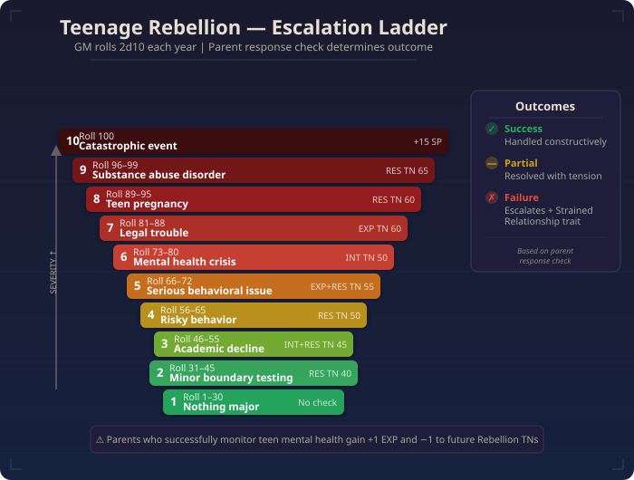
The teenage years are the most emotionally complex phase of parenting. The child is becoming independent, making their own decisions, and testing boundaries. The parent's role shifts from manager to advisor — but the stakes have never been higher.
6a. Rebellion Mechanics
Teenagers push boundaries. Each year, the GM rolls 2d10 on the Rebellion Table:
The parent's response check is critical. Success means the situation is handled constructively. Partial success means it's resolved but with lasting tension. Failure means the situation escalates and the parent-child relationship suffers (+5 SP, possible Trait: Strained Relationship).
6b. College Planning & Costs
Starting around age 15–16, college planning begins. This is a massive financial and emotional undertaking:
| Task | 💰 Cost | Parent Check | TN |
|---|---|---|---|
| SAT/ACT prep courses | $500–$2,000 | INT (research) | TN 40 |
| College application fees | $25–$80 per school | — | — |
| College visits (travel) | $500–$2,000 per trip | INT (planning) | TN 45 |
| Counseling / prep services | $2,000–$10,000 | INT (choosing advisor) | TN 50 |
| FAFSA / financial aid | Free (time-intensive) | INT | TN 55 |
| Scholarship applications | Free (very time-intensive) | INT + EXP | TN 50 |
💰 College tuition itself: $10,000–$40,000/year for public in-state, $30,000–$60,000+/year for private. Over 4 years, that's 💰 $40,000–$240,000+. Even with financial aid, most families pay 💰 $10,000–$80,000 out of pocket.
6c. Driving Lessons & Car Insurance
Getting a teen driver's license is a rite of passage and a financial event:
| Step | 💰 Cost | Notes |
|---|---|---|
| 🚗 Driver's ed course | $150–$600 | Required in most states |
| 📝 Permit practice hours (50+) | $0 (parent time) | Parent must supervise |
| 👨🏫 Behind-the-wheel lessons | $50–$100/hr × 6–10 hrs | Professional instructor |
| 📋 State testing fees | $50–$100 | Written + road test |
| 🚙 Car purchase (used) | $3,000–$10,000 | Must be reliable and safe |
| 📄 Teen driver insurance | $2,000–$5,000/year | Often doubles the family's total insurance |
💰 Total first-year driving cost: $5,500–$20,000+
6d. Mental Health Monitoring
Teenage years are the highest-risk period for mental health issues. The GM should roll 2d10 at the start of each year:
Parents who successfully monitor and support their teen's mental health gain +1 EXP and strengthen the parent-child bond (−1 to future Rebellion Table TNs).
7. Adoption & Foster Care
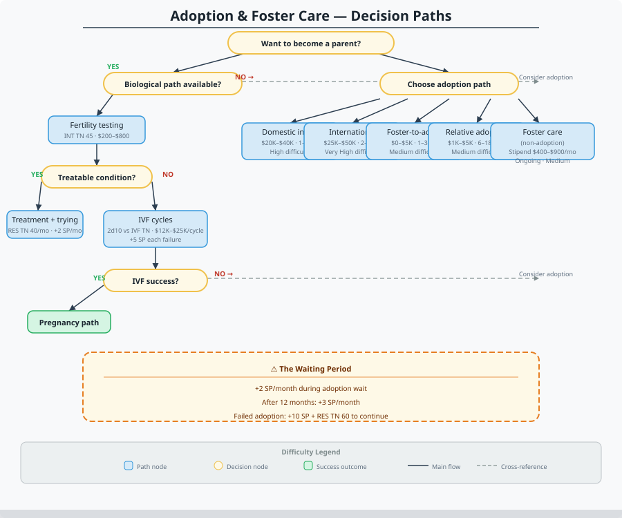
Not all families are formed through biological birth. Adoption and foster care are valid, meaningful paths to parenthood in Reality RPG — and they come with their own unique challenges.
7a. The Adoption Process
Adoption is expensive, slow, and emotionally taxing. The timeline and costs vary dramatically by type:
Domestic Infant
💰 $20K–$40K · ⏱️ 1–3 years
⚠️ High — birth mother may change her mind
International
💰 $25K–$50K · ⏱️ 2–5 years
⚠️ Very High — travel, immigration, country requirements
Foster-to-Adopt
💰 $0–$5K · ⏱️ 1–3 years
⚠️ Medium — child may be reunified with birth family
Relative Adoption
💰 $1K–$5K · ⏱️ 6–18 months
⚠️ Medium — family dynamics complicate
Foster Care (Non-Adoption)
💰 Stipend: $400–$900/mo · ⏱️ Ongoing
⚠️ Medium — temporary placement, emotional attachment risk
The adoption process requires:
- Home study (social worker visits, background checks, financial review) — INT check TN 45 to present a strong case
- Documentation (financial statements, references, personal statements) — EXP check TN 40
- Waiting period during which the family must maintain stability — RES check TN 40 per quarter. Failure adds +3 SP.
- If placing an older child or sibling group: additional training and preparation — RES check TN 50
During the adoption wait, the family gains +2 SP per month from the uncertainty. After 12 months, this increases to +3 SP/month. A failed adoption (the birth parent changes their mind, the country closes its program, etc.) adds +10 SP and may require a RES check at TN 60 to continue pursuing adoption. Failure means the family steps back from adoption — at least temporarily.
7b. Foster Care System
Foster parents provide temporary care for children whose birth families cannot safely care for them. Foster parents receive a monthly stipend of $400–$900 per child but must provide everything else:
| Aspect | Detail |
|---|---|
| Child's background | Unknown at placement. The child may have experienced abuse, neglect, or trauma. |
| Placement duration | Days to years. The goal is reunification with birth family. |
| Visitation | The birth parent(s) may have visitation rights, which can be emotionally difficult for everyone. |
| Case worker oversight | Regular home visits, court hearings, documentation. EXP check TN 45 per quarter to navigate bureaucracy. |
| Emotional toll | Foster parents gain +2 SP/month from the uncertainty of temporary placement. If a child is reunified, foster parents gain +5 SP from the goodbye (bittersweet but necessary). |
7c. Trauma-Informed Parenting
Children who enter adoption or foster care have often experienced trauma. This requires specialized parenting approaches:
Professional therapy for the child is almost always needed: 💰 $100–$200/session, 1–2× per week for the first year. The parent must also make RES checks at TN 40 monthly to maintain their own emotional health while supporting a traumatized child.
7d. Attachment Issues
Building a parent-child bond takes time with adopted or foster children. The GM tracks Attachment Level on a scale of 1–5:
Unattached
No trust
Cautious
Distant
Conditional
Withdraws under stress
Securely Attaching
Seeks comfort
Secure
Strong bond ❤️
A setback (trauma trigger, inconsistent care, a failed RES check) can drop the attachment level by 1. It takes twice as long to rebuild as it did to lose.
8. Co-Parenting After Divorce
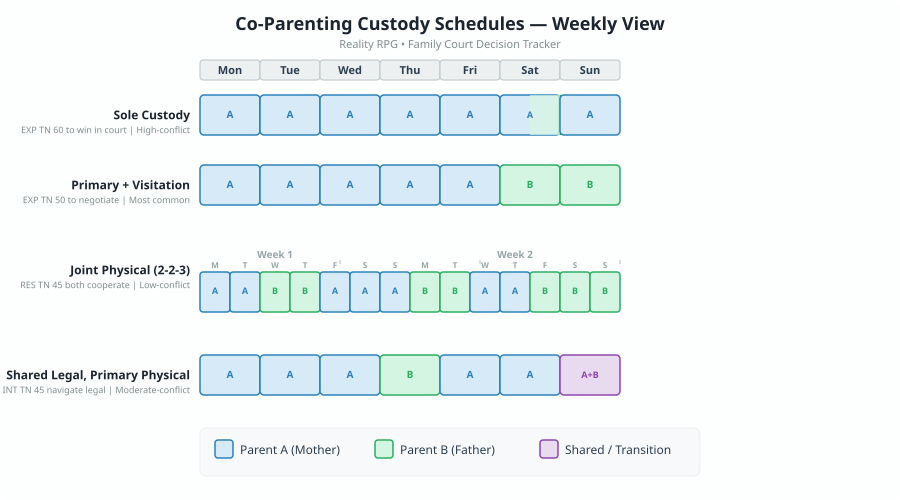
When a couple divorces but has children, the parenting doesn't stop — it just gets more complicated. Co-parenting after divorce is one of the most stressful life events in Reality RPG.
8a. Custody Arrangements
The court (or mutual agreement) determines custody:
Sole Custody
One parent has primary residence
EXP TN 60 to win in court
Common in high-conflict divorces
Primary + Visitation
2/3 with one parent, 1/3 with other
EXP TN 50 to negotiate
Most common arrangement
Joint Physical (2-2-3)
50/50 split
RES TN 45 (both must cooperate)
Low-conflict, cooperative divorces
Shared Legal, Primary Physical
Both decide major issues; child lives mostly with one
INT TN 45 to navigate legal system
Moderate-conflict cases
Custody battles are brutal. Each court appearance adds +3 SP. A contentious custody battle (3+ court appearances) adds +2 SP per week for both parents and the child. The child gains Trait: Insecure if the battle lasts longer than 6 months.
8b. Child Support
The non-custodial (or lower-time) parent pays child support. The amount is calculated based on income:
| Payer's Monthly 💰 Income | 1 Child | 2 Children | 3+ Children |
|---|---|---|---|
| $2,000–$3,000 | $150–$300 | $250–$500 | $350–$700 |
| $3,000–$5,000 | $300–$500 | $500–$800 | $700–$1,200 |
| $5,000–$8,000 | $500–$800 | $800–$1,300 | $1,200–$1,800 |
| $8,000–$12,000 | $800–$1,200 | $1,300–$2,000 | $1,800–$2,800 |
| $12,000+ | $1,200–$2,000+ | $2,000–$3,500+ | $2,800–$5,000+ |
Child support is typically paid for 18+ years. Non-payment is common — the receiving parent may need to EXP check at TN 55 to enforce payment through the court system.
8c. Blended Family Dynamics
If one or both parents remarry, the child must integrate into a blended family. This adds new challenges:
| Challenge | Check | TN | Failure Effect |
|---|---|---|---|
| Stepparent-child relationship | RES (both stepparent and child) | TN 50 | Ongoing tension, child resists stepparent |
| Sibling rivalry (half/step-siblings) | RES (parent mediating) | TN 45 | Conflict, +2 SP per incident |
| Loyalty conflicts | INT (recognizing the issue) | TN 50 | Child feels torn between parents, +3 SP |
| Different discipline styles | EXP (family meeting) | TN 45 | Inconsistent rules confuse the child |
| 💰 Financial blending | INT (budgeting) | TN 55 | Money conflicts between new spouses |
8d. Holiday & Scheduling Conflicts
Co-parents must negotiate holidays, birthdays, school events, and vacations. Each scheduling conflict requires a RES check at TN 40 to compromise gracefully. Failure means the conflict escalates: +2 SP for both parents, and the child gains +1 SP from feeling caught in the middle.
After Mark and Sarah divorce, they must create a holiday schedule for their 6-year-old daughter Lily. Sarah wants Christmas Eve (tradition). Mark wants Christmas Day (he never gets to spend it with her). Both make RES checks at TN 40. Sarah rolls 2d10 = 28, +4 = 32. Success — she's willing to compromise. Mark rolls 2d10 = 42, +3 = 45. Partial success — he agrees to alternate years. The arrangement: odd years, Sarah has Christmas Eve and Mark has Christmas Day; even years, reversed. Both parents gain +1 SP from the negotiation stress, but the RES checks succeeded, so Lily doesn't feel caught in the middle.
9. The Financial Impact of Children
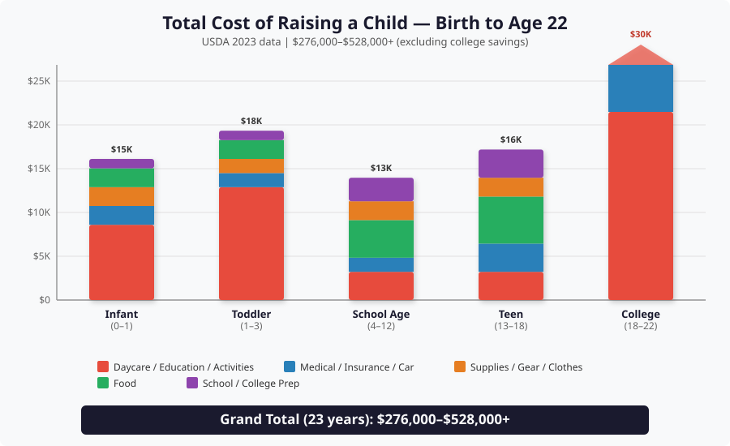
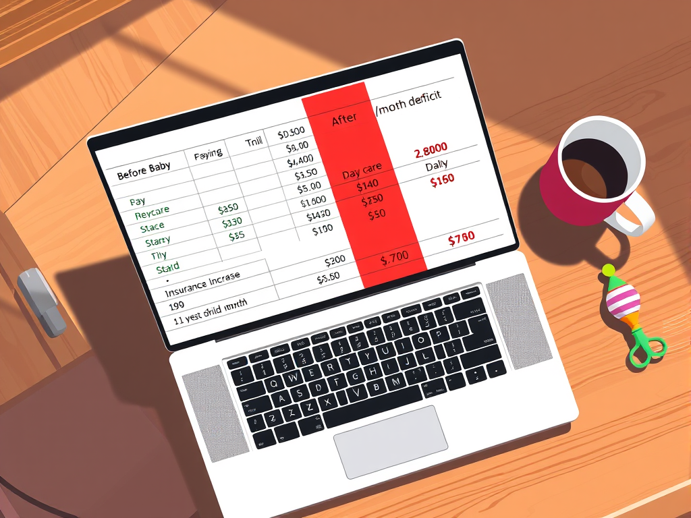
Raising a child from birth to age 18 costs, on average, 💰 $233,610 (US Department of Agriculture, 2023) — not including college. In Reality RPG, this is not abstract. It is felt every month in the form of budget constraints, career sacrifices, and financial stress.
9a. Total Cost by Age Stage
| Age Stage | Duration | 💰 Annual Cost | 💰 Stage Total | Major Expenses |
|---|---|---|---|---|
| 🍼 Infant (0–1) | 1 year | $12,000–$18,000 | $12,000–$18,000 | Daycare, diapers, formula, gear, medical |
| 🧒 Toddler (1–3) | 3 years | $14,000–$22,000 | $42,000–$66,000 | Daycare, food, clothes, activities |
| 👦 School Age (4–12) | 9 years | $10,000–$16,000 | $90,000–$144,000 | Food, clothes, activities, school supplies, healthcare |
| 🧑 Teen (13–18) | 6 years | $12,000–$20,000 | $72,000–$120,000 | Food, car, activities, college prep, healthcare, clothes |
| 🎓 College (18–22) | 4 years | $15,000–$45,000 | $60,000–$180,000 | Tuition, room/board, books, fees |
| TOTAL | 23 years | — | 💰 $276,000–$528,000 | All of the above |
The table above doesn't include: parental career sacrifices (one parent reducing hours or leaving the workforce: 💰 $500,000–$1,000,000+ in lost lifetime earnings), opportunity costs (delayed home purchase, reduced retirement savings), emotional costs (SP accumulation, relationship strain, sleep deprivation), or tax implications (child tax credit offsets some costs but not all). The true cost of a child over 23 years is closer to 💰 $1,000,000–$2,000,000 when all factors are included.
9b. College Savings Plans (529 Plans)
Parents can open a 529 college savings plan to save for future education costs. In Reality RPG, this is a financial planning decision made early:
| Aspect | Detail |
|---|---|
| Monthly contribution | 💰 $50–$500/month typical |
| Annual limit | 💰 $15,000 per contributor (per child) |
| Tax benefit | Tax-deferred growth; tax-free withdrawals for qualified education expenses |
| Parent check to maintain | RES TN 35 per quarter — staying disciplined about saving when money is tight |
| Failure effect | Parent skips contributions. +1 SP from guilt. College costs increase later. |
A family that saves 💰 $200/month from birth with a 6% average return will have approximately 💰 $74,000 by the time the child turns 18. This covers a significant portion of public college costs but falls short of private college tuition.
9c. Insurance Changes
Adding a child to the family changes insurance needs dramatically:
Health (Adding Dependent)
💰 +$200–$600/mo
Pediatrician visits, vaccines, emergencies
Life Insurance (Increase)
💰 +$50–$200/mo
Ensures child provided for if parent dies
Homeowners / Renters
💰 +$0–$100/mo
Liability coverage increases with children
Auto Insurance
💰 +$100–$400/mo
Increases significantly when teen gets license
Disability Insurance
💰 +$50–$150/mo
Critical if one parent is primary earner
💰 Total monthly insurance increase: $400–$1,450/month, or 💰 $4,800–$17,400/year.
Mark and Sarah earn a combined $95,000/year. Before Lily was born, their monthly budget looked manageable: $2,800 mortgage, $400 groceries, $300 utilities, $200 insurance, $500 entertainment/dining, with $1,000 left for savings.
After Lily's birth, the new reality:
- Sarah reduces to part-time, losing 💰 $20,000/year in income
- Daycare: 💰 $1,200/month ($14,400/year)
- Health insurance increase: 💰 $400/month ($4,800/year)
- Baby supplies, food, clothes: 💰 $300/month ($3,600/year)
- Savings drops to $0/month
- Emergency fund: none
Their monthly deficit is now −$800. They credit-card the gap, accumulating debt. Both parents gain +3 SP/month from financial stress. After 6 months, they've accumulated 36 SP from finances alone and are 💰 $4,800 in credit card debt. This is not a bad outcome — this is a typical outcome for a middle-class American family with one child.
Having a child in Reality RPG is not a side quest. It is a campaign-altering event that touches every system in the game. Sleep disappears. Finances tighten. Relationships strain. Stress compounds. The character who chose parenthood chose a harder, richer, more meaningful game. The SP cost is real. The financial cost is real. The emotional cost is real. But so is the love, the growth, the laughter, and the profound privilege of watching a human being become themselves. Reality RPG does not judge the choice to parent — or the choice not to. It simply models the consequences with the honesty that life itself demands.